打开一个父文件夹，就是一整个工作区
自动发现子仓库，统一看状态和历史，可批量拉取、预览后推送。谁成功、谁卡住，每个仓库各自给出结果，不靠回忆。
Workspace你可能也遇到过：改了几个项目，终端开了八个，最后不记得自己到底推了哪一个。 GitVista 是一个面向 Windows 和 macOS 的 Git 桌面工作台，专门解决这类「小事很多、切来切去」的日常。
Windows x64 · macOS Apple Silicon / Intel · 无需注册账号 · 中英文界面
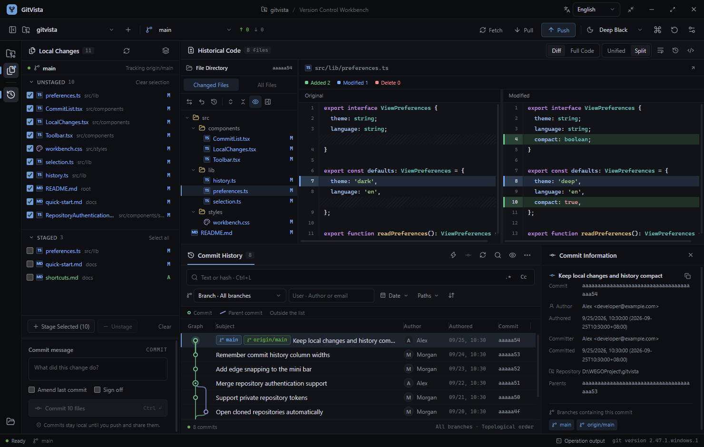
下面六件事，是 GitVista 与大多数客户端真正拉开差距的地方。每一条都能在安装包里直接验证。
自动发现子仓库，统一看状态和历史，可批量拉取、预览后推送。谁成功、谁卡住，每个仓库各自给出结果，不靠回忆。
Workspace工作区与暂存区分开展示，文件可勾选、差异可逐个查看。预览之后内容变了，会请你重新确认 —— 避免「看的是 A，交上去的是 B」。
Push Preview提交图、文件树、改动内容、完整历史源码联动显示。想查某个文件怎么变成今天这样，直接沿着历史往回看。
Interactive Graph迷你横条支持拉取、查看最近提交、快捷提交和推送预览；贴到屏幕边缘还能磁吸收起。它负责待命，不负责占据你的整张桌面。
Mini BarWindows 包自带 MinGit 2.47.1，打开本地仓库就能用，不依赖系统 PATH。需要特殊配置时，也能在设置里指定本机完整 Git。
Bundled Git历史按页读取，日志与图只绘制可见部分；大文件按页解析；过期查询取消，托盘暂停自动刷新。设置里能看内存、缓存并清理可重建内容。
Budgeted5 套浅色 + 7 套深色主题；中英文切换；四档界面字号、独立代码字号；自动换行；统一 / 并排差异视图。面板宽度、历史列宽都能自己拖。
12 Themes · i18n · Resizable不讲抽象功能清单，只讲一天里真实会发生的那几次操作。
打开装着所有项目的父目录，GitVista 自动发现每一个子仓库，在一个列表里给出当前分支、领先/落后提交数和未提交改动。早上一次性批量拉取，下班前预览再统一推送。
以前：为每个仓库开一个终端，或者在一个客户端里开一堆标签页，逐个数谁还没推。
工作区与暂存区分列，勾选文件只是「选择」而不是「暂存」。点开任一文件看并排差异，决定这一小段改动到底进不进去。推送前还有一层预览：待推送提交、文件、目标远端都列出来。
以前：git add . 之后才发现把一个临时调试文件也带上了，或者推完才发现推错了分支。
把迷你横条贴在屏幕边缘，它平时是一条细条，悬停展开。写代码时随手唤起，写一句说明，创建本地提交；需要推的时候再走推送预览。收起后它不占用你的桌面。
以前：为了一句「修个 typo」的提交，切到客户端、等它加载、提交、再切回来。
安装包内置 MinGit，装完打开仓库就能用，不用先装 Git for Windows、不用配 PATH、不用折腾终端编码。每个动作旁边都写了通俗解释：获取是「先看看远端有什么」，拉取是「把远端变化整合进来」。
以前：装了客户端却提示「找不到 git 可执行文件」，卡在第一步。
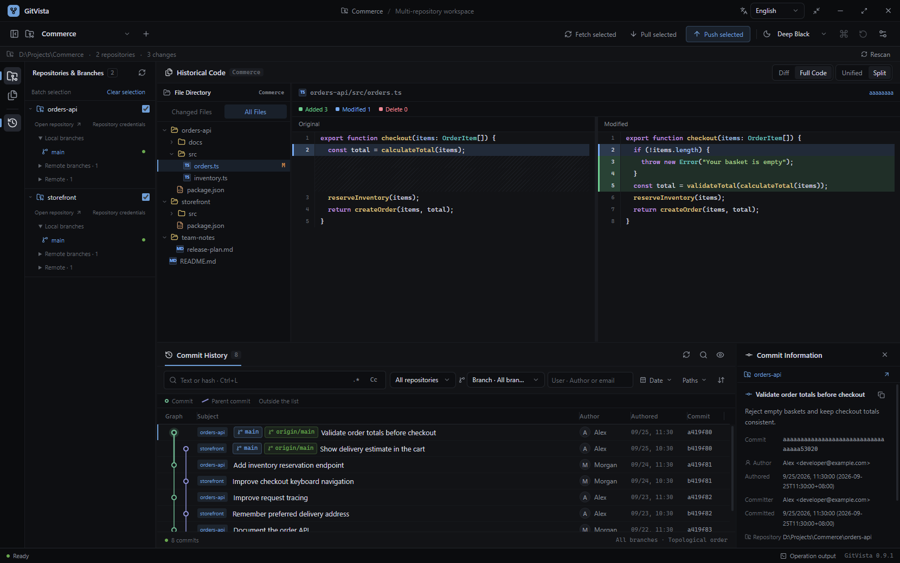
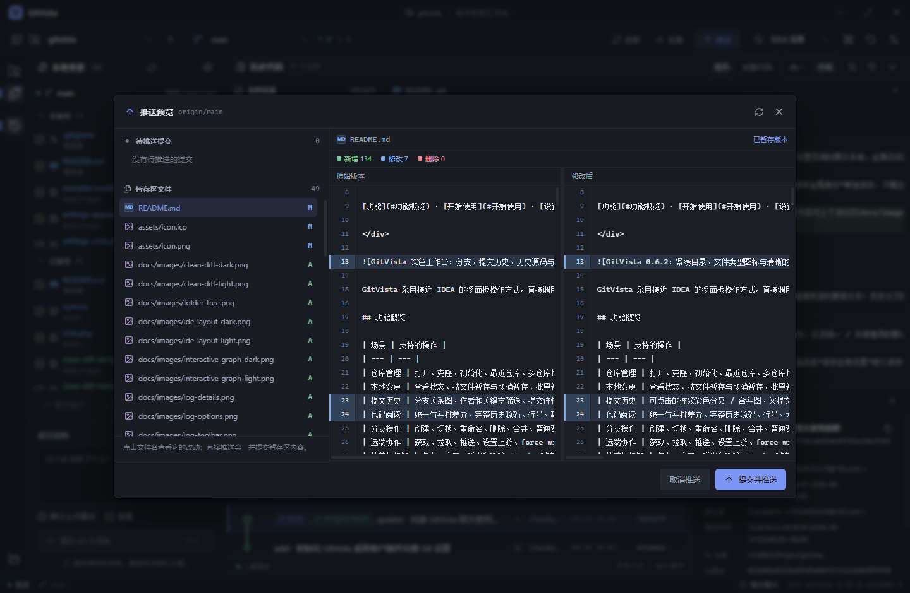
下面每一块都对应界面上真实存在的一处操作，配截图说明。
左边选文件，右边看差异。Diff / Full Code 在差异与完整源码之间切换，Unified / Split 切换统一与并排视图。勾选文件只是选择，并不等于已经暂存 —— 批量暂存、取消暂存、提交或修订上一次提交都由你确认。
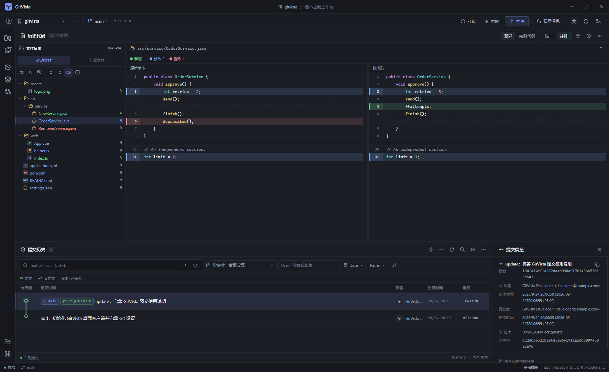
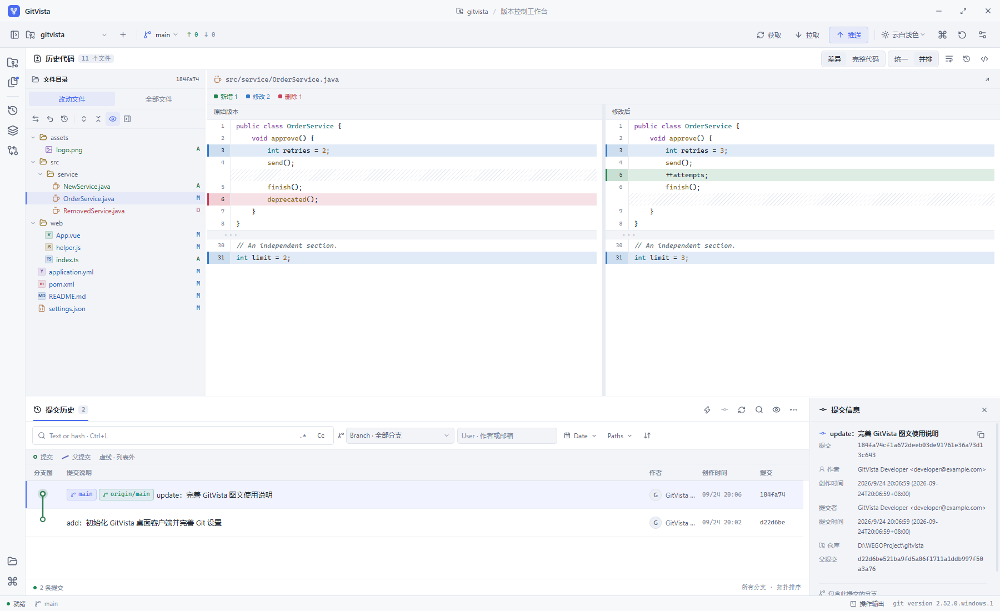
历史支持文本、哈希、正则、分支、作者、日期和路径筛选 —— 筛选作用在 Git 历史本身，不局限于当前已加载的那一页。提交图、文件树、改动内容与完整历史源码联动，点节点或连线即可定位相关提交。
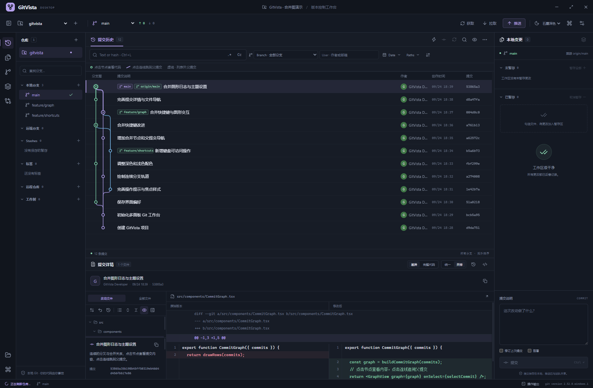
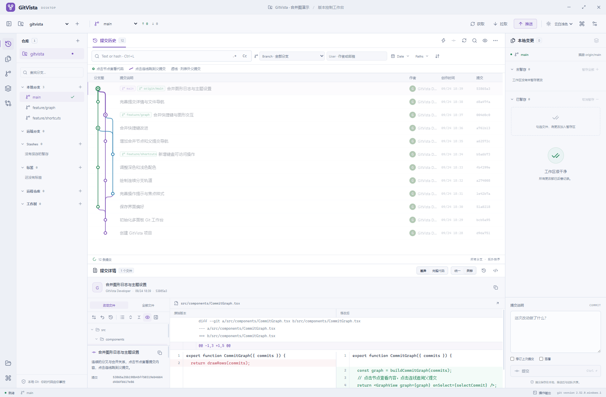
界面上不假设你已经背熟了 Git 术语，每个动作旁边都写了它在干什么。工具箱覆盖分支、标签、Stash、合并、普通变基、拣选、反向提交、重置、工作树、补丁和子模块 —— 破坏性动作有确认，强制推送固定使用 --force-with-lease。
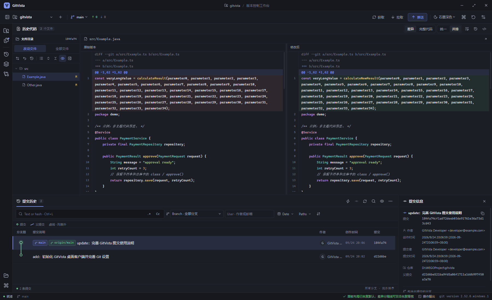
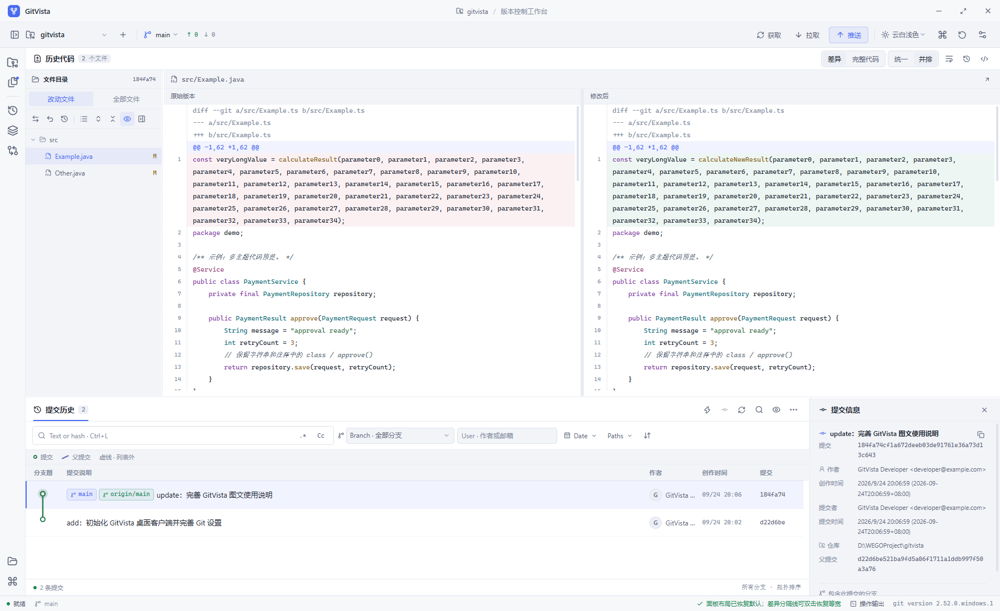
第一次使用时才创建，所以平时不会多占一份进程。悬停展开，靠近屏幕边缘磁吸收起。它支持拉取、查看最近提交、快捷提交和推送预览 —— 写一句说明就能留下一个可追溯的本地提交。
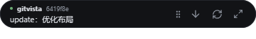
5 套浅色主题（light / sand / sky / mint / lavender）与 7 套深色主题（dark / midnight / nord / forest / rose / darcula / deep）。中英文界面切换，四档界面字号加独立代码字号，代码区可自动换行。面板宽度、历史列宽都能拖。
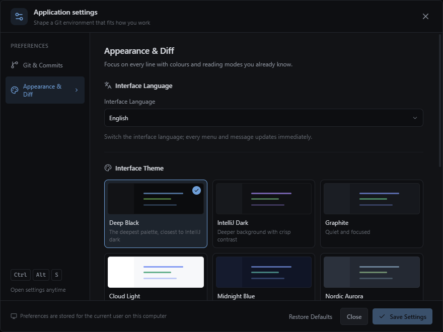
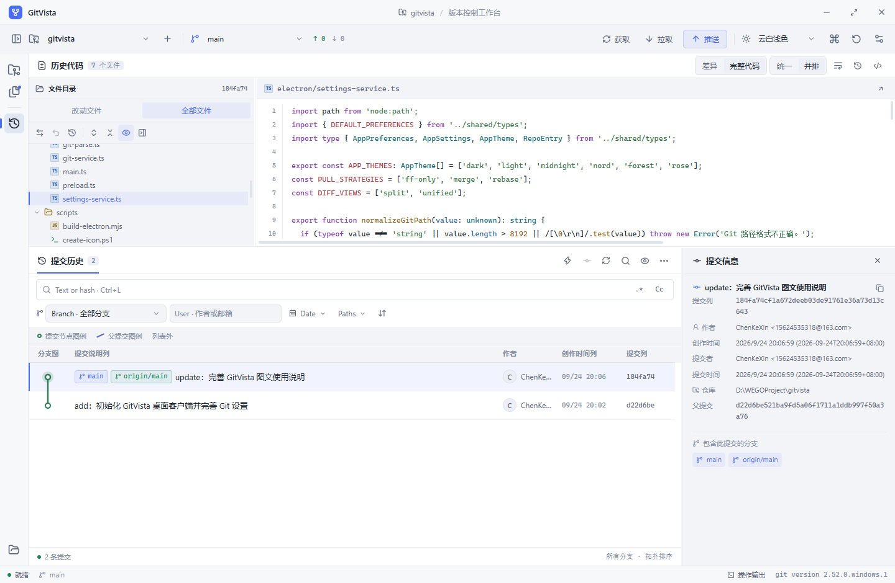
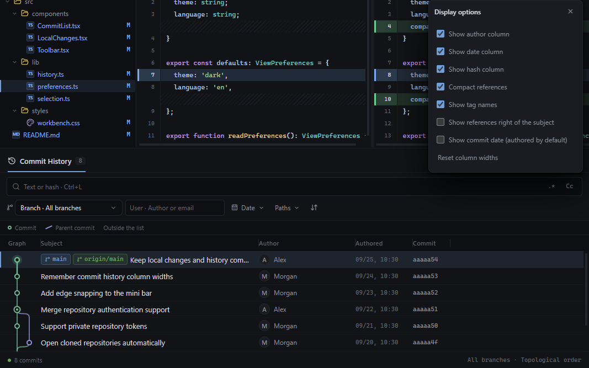
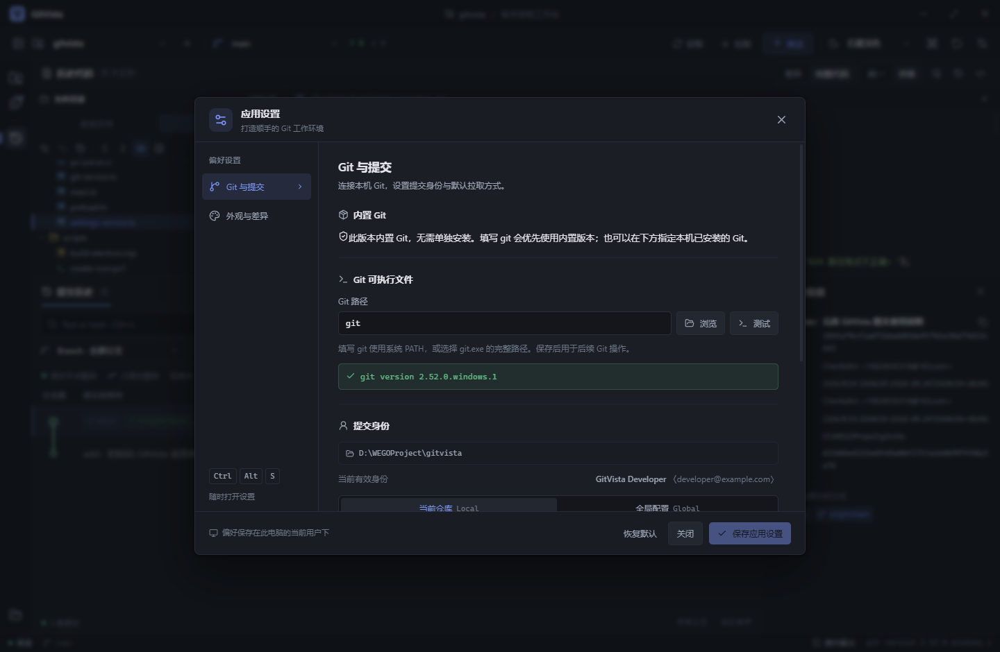
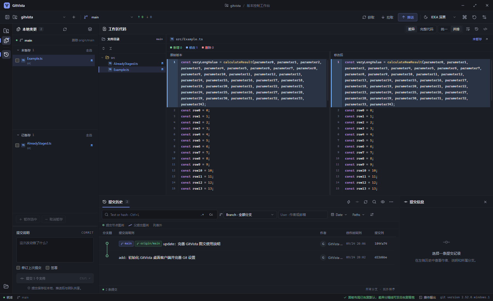
下表按各产品公开资料与其官方文档整理，只对比公开、可验证的能力。勾选与部分支持的区别写在注解里。
| 能力 | GitVista 本页 | GitHub Desktop | Sourcetree | GitKraken | Fork | TortoiseGit |
|---|---|---|---|---|---|---|
| 价格 / 授权 | 免费 · MIT 开源 | 免费 | 免费 | 免费版 + 付费档 | 付费，有试用 | 免费开源 |
| 内置 Git，免装免配 | Windows 内置 MinGit；macOS 使用本机 Git | 内置 Git，但隐藏且不易排查 | 自带但常需手动指向外部 Git | 倾向使用系统 Git | 使用系统 Git / 凭据管理器 | 需自行安装 Git for Windows |
| 多仓库统一工作区 | 打开父目录自动发现，按仓库报告结果 | 一个仓库一个窗口 | 多标签页 / 多窗口，无聚合视图 | Workspaces 多仓库聚合 | 无同等聚合界面 | 资源管理器内单仓库操作 |
| 推送前逐项预览 | 列出待推送提交与暂存内容，内容变化要求重新确认 | 直接 Push origin | 推送对话框，非内容级预览 | 推送对话框，非内容级预览 | 推送对话框，非内容级预览 | 推送对话框，非内容级预览 |
| 桌面迷你快捷入口 | 迷你横条：快捷提交、拉取、推送预览，可磁吸收起 | 无 | 无 | 无 | 无 | 无 |
| 界面语言 / 主题 | 中 / English；12 套主题；4 档界面字号 | 跟随系统深浅色，主题数少 | 有深浅色，自定义有限 | 多套主题，部分需付费 | 有深浅色主题 | 跟随系统主题 |
| 大仓库分页与内存预算 | 分页 + 可见区渲染 + 取消过期读取，附公开实测报告 | 未公开预算口径 | 大仓库易卡顿的历史口碑 | 未公开预算口径 | 未公开预算口径 | 未公开预算口径 |
| 免注册、免登录 | 无需账号，打开即用 | 需登录 GitHub 账号 | 部分功能需 Atlassian 账号 | 需登录账号 | 无需账号 | 无需账号 |
| 代码审查 / PR / Issue 集成 | 专注本地 Git 操作，不做托管平台集成 | GitHub PR 全流程 | Bitbucket / Jira 深度集成 | 多平台集成是其主打 | 有托管平台快捷跳转 | 无 |
| Linux / macOS 支持 | macOS 支持 Apple Silicon / Intel；暂无 Linux | Win / macOS | Win / macOS（已下架 Linux） | Win / macOS / Linux | Win / macOS | Windows 资源管理器集成 |
| 公开资源占用实测报告 | 含测试机配置、场景、采样方法与局限性说明 | 无 | 无 | 无 | 无 | 无 |
docs/resource-report-0.9.8.md，可以逐条核对。
其余各列依据各产品公开官网、文档与常见第三方对比整理，反映整理时的普遍认知，产品迭代很快，请以各自官网为准。
表中也如实列出了 GitVista 目前明确不擅长的地方（无托管平台 PR/Issue 集成、暂不提供 Linux 发行包），
因为它是一个专注本地 Git 操作的桌面工具，而不是要替代所有人的全能平台客户端。
测量日期 2026-09-27，Windows x64，对比本机已安装的 0.9.7 与本次生产构建的 0.9.8。完整报告见仓库 docs/resource-report-0.9.8.md。
相同 1560 × 1000 内容区、DPR 1；每次采样前后确认页面可见，Windows 实际前台窗口属于该测试进程；各取 5 次样本。
应用进程数由 5 降至 4。最小–最大区间：0.9.8 私有内存 276.34–276.36 MiB。
每场景 5 次采样均值。此轮 Windows 将主窗口判为隐藏/被遮挡，因此主窗口数据只作为后台数据，不作为前台低内存宣传。
| 场景 | 0.9.7 | 0.9.8 | 变化 |
|---|---|---|---|
| 主窗口后台启动 | 216.0 | 164.9 | −51.1 |
| 后台切换历史后 | 217.9 | 161.5 | −56.4 |
| 进入迷你模式 | 219.0 | 210.4 | −8.6 |
| 托盘隐藏 70 秒 | 212.3 | 205.3 | −7.0 |
| 恢复主窗口后再次后台 | 287.5 | 209.5 | −78.0 |
源码大小、开发目录大小、安装大小是三本不同的账。node_modules、历史安装包和测试浏览器目录不能全部算成「软件运行必需体积」。
GitVista 基于 Electron，带有浏览器运行时。它免部署、少配置，但不是几 MB 的原生小工具 —— 与其让用户猜，不如直接说明。
测试机：AMD Ryzen 7 5800H，16 个逻辑处理器，操作系统可见内存 13.86 GiB，Windows 内核 10.0.26200，两版均为 Electron 44.4.5。
下面按真实操作顺序排列：装好、打开仓库、看改动、提交、推送。
macOS：在「关于本机」查看芯片，下载对应的 Apple Silicon / Intel DMG，将 GitVista 拖入「应用程序」。Mac 版使用本机 Git；运行 git --version 检查，未安装时执行 xcode-select --install 并完成系统安装，或使用 Homebrew 安装 Git。
下载 GitVista-0.9.8-Setup-x64.exe 安装器，可以自选安装目录，默认建议 D:\LenovoSoftstore\GitVista，并创建桌面 GitVista 快捷方式。启动不需要管理员权限之外的额外配置。
也提供 GitVista-0.9.8-Windows-x64.exe 便携包。便携包启动时需要解压，日常频繁使用更推荐安装版 —— 便携不是「零磁盘占用」的魔法，它只是少了一步安装。
打开有 .git 的目录，进入单仓库工作台；打开装着多个项目的父目录，进入多仓库工作区。也可以指定父目录克隆远端仓库，完成后自动打开。最近打开的位置保存在本机，最多 30 条。
多仓库批量操作按仓库报告成功、失败和跳过。它们不是一个跨仓库事务：某个仓库失败，不会撤回其他仓库已经完成的提交或推送。
左边选文件，右边看差异。勾选文件只是选择，并不等于已经暂存。可以批量暂存、取消暂存、提交或修订上一次提交。
迷你横条的 Quick commit / 快捷提交 会显示文件与来源，填写说明后创建本地提交。本地提交成功，不等于已经推送到远端。
| 动作 | 通俗解释 |
|---|---|
| Fetch / 获取 | 先看看远端有什么新东西，更新远端引用 |
| Pull / 拉取 | 把远端变化整合到当前分支；默认仅快进，分叉时停下来 |
| Commit / 提交 | 给本地修改留一个可追溯的版本 |
| Push / 推送 | 把本地提交送到配置好的远端 |
推送前先走推送预览：列出待推送提交和暂存内容，执行前重新核对 HEAD、分支、远端及索引。工具箱还提供分支、标签、Stash、合并、普通变基、拣选、反向提交、重置、工作树、补丁和子模块操作。破坏性动作有确认，强制推送使用 --force-with-lease。
冲突可以选 ours / theirs，也可以手动编辑后标记解决，再继续当前 Git 操作。
标题栏 — 最小化到任务栏；标题栏 × 默认询问退出或隐藏到右下角托盘，可以记住选择，之后在 设置 → 常规 里随时改。
Mini bar / 迷你横条第一次使用时才创建，悬停展开，靠近屏幕边缘可磁吸收起。只留托盘时会暂停自动历史刷新；恢复窗口时重新读取。Git 写操作或设置保存未结束时，会阻止直接退出，避免手快关掉正在干活的程序。
Windows 或 macOS，Node.js 22.12+。Mac 在安装依赖后运行 npm run package:mac，产物位于 release/macos-版本-构建标识/；以下本地安装和清理命令仅用于 Windows。
# 获取源码并安装依赖 git clone https://github.com/sssjack/gitvista.git cd gitvista npm ci # 开发模式（仅监听 127.0.0.1:5179） npm run dev # 生成 Windows x64 安装器与便携包，产物在 release/ npm run package # 只要本机可运行的解压目录 npm run package:dir
打包会获取并验证 MinGit 2.47.1。已有可用版本会复用；下载或构建失败不会替换上一份成功产物。发布包只带应用构建结果与运行所需文件，不夹带开发用的整套 node_modules。
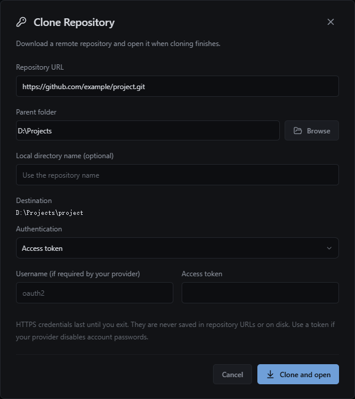
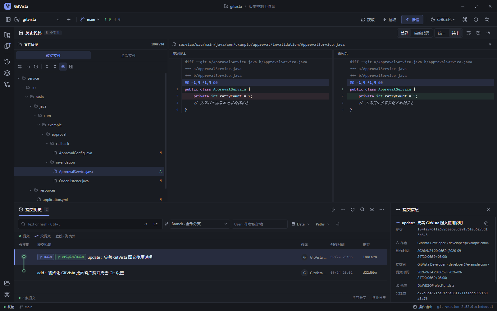
版本 0.9.8 · Windows x64 / macOS 13+ · 无需注册账号。
Windows 推荐安装版；Mac 请按芯片选择 DMG，打开后将 GitVista 拖入「应用程序」。
首次运行 Windows 可能提示来自未知发布者 —— 这是未做代码签名的直接后果，不是打包缺陷。选择「更多信息 → 仍要运行」即可。
Mac 包使用 ad-hoc 签名，尚未经过 Apple Developer ID 签名及公证。首次打开若被拦截，确认下载来源后在「系统设置 → 隐私与安全性」选择「仍要打开」；参见 Apple 说明。ZIP 包与校验信息见 Release。